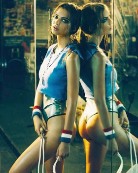
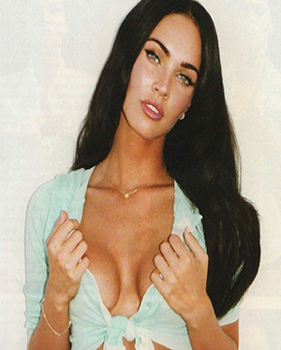
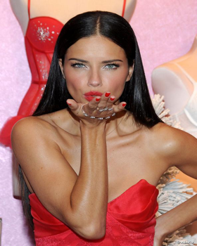

Visionnaire tumultueux, Abel Brown comprit très vite la puissance de la programmation informatique. À l'âge de six ans, il décida d'intégrer le premier bootcamp entièrement dédié à l'apprentissage du langage Ruby. Inutile de préciser que ses compétences surhumaines et son intelligence accrue le placèrent parmi les wagonians les plus talentueux du programme. Dès lors, on ne le connut que par son surnom : le Daredevil du code !
|  |
Emilie RatajkowskiMalgré tout ce succès, l'existence d'Emily O'Hara Ratajkowski n'a aucun sens sans la présence continuelle de son Daredevil adoré. Comme elle aime à le rappeler, le seul Abel vous manque et tout est dépeuplé. |
|  |
Megan FoxLes prestations de Megan Fox dans Transformers et Ninja Turtles n'ont pas autant marqué le public que ses courbures de rêve et son penchant pour la bisexualité. Elle papillonna pendant plusieurs mois avec le ténébreux Daredevil du code pour lequel elle gardera un amour, dit-elle, "passionnel et éternel" |
|  |
Adriana LimaAdriana Lima ne peut s'empêcher de répéter à tue-tête " à tous les journalistes qu'elle croise : Eu sinto sua falta mi Daredevil!!!!" ("Tu me manques mon Daredevil!!!!"). |
Cette page a été codée avec l'aimable autorisation d'Abel Brown, aka "the Daredevil du code" qui approuva tout son contenu.